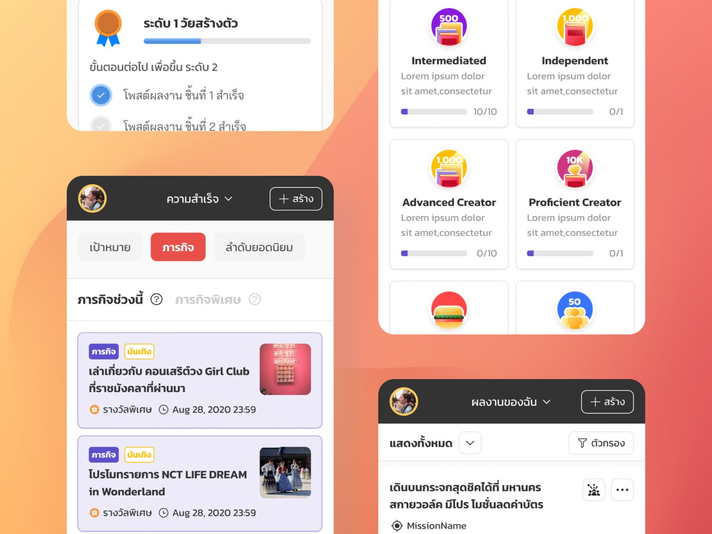
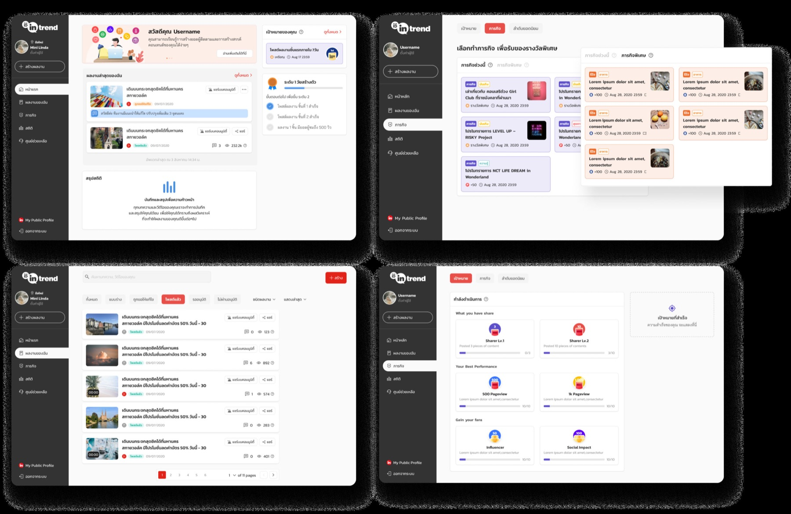
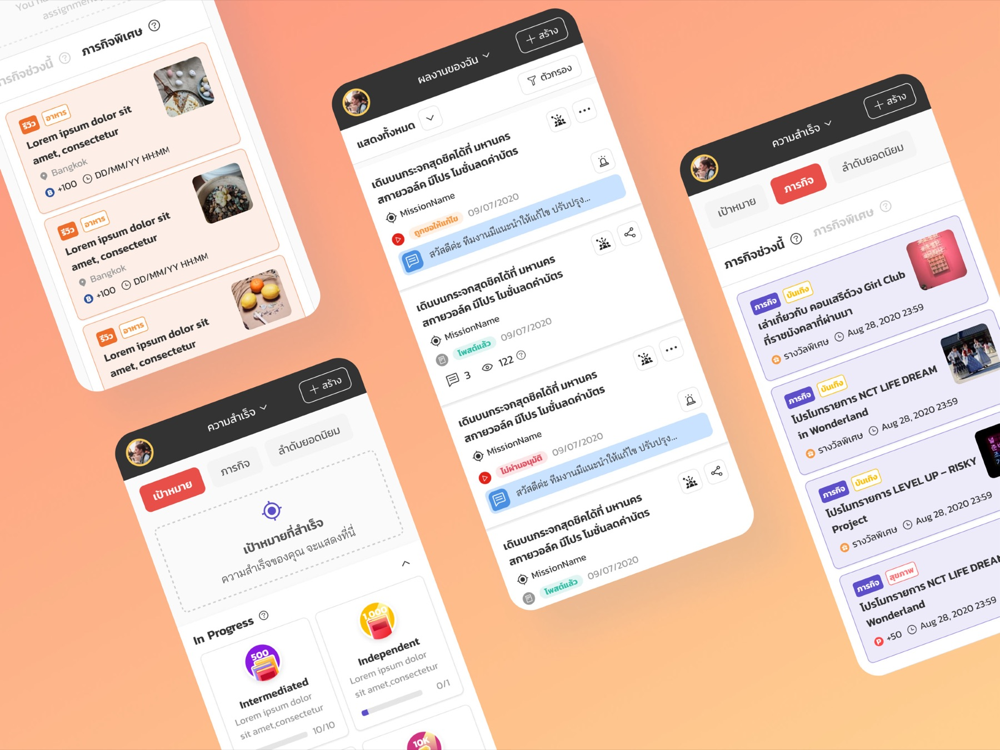

Turning a year of user feedback into a Creator Studio revamp
TrueID In-Trend is where Thai creators share their stories. After a year of listening to them, it was time to fix how they write and submit content.

The problem
A year after launch, creators kept hitting the same problems: steps in the wrong order, confusing missions, and no easy way to find their own posts.
What I did
I went back through three rounds of our research, sorted the issues with our developers and redesigned the whole creator journey, mobile first.
Outcome
A writing flow that follows how creators really work, one place for content and missions, and new badges to celebrate progress.
Context
In-Trend is a user-generated content platform where Thai creators share stories and interests.
- Every submission is reviewed by In-Trend editors before it's published.
- Editors give each creator personal feedback on quality.
- Creators earn rewards by completing missions.
Creators loved the feedback and the rewards. But after a year, we'd collected a long list of usability issues. It was time to fix the experience as a whole, not one patch at a time.

Start with what we already knew
Creator dashboard
In-person usability test of the creator portal.
Missions & leaderboard
In-person usability test of daily missions and ranking.
Tags & content template
Guerrilla test of the writing template.
Instead of new research, I re-validated a year of findings.
I reviewed every past study, kept the issues that were still valid, and sat down with the product owner and developers to score each one on impact and effort. That gave us a scope we could actually ship in one iteration.
Three issues stood out
- Title first? The title was mandatory up front, but creators told us they write it last.
- Content before admin. Creators wanted to focus on writing first, and pick cover image and category later.
- Mission overload. Too many mission types confused beginners.
Design: follow the creator's order
Most creators visit on their phones, so I designed mobile first.
- 3-step stepper: write content and title → add cover and category → preview and submit.
- Auto-save, so no draft gets lost on a phone.
- Caption on cover image, a feature creators asked for directly.
- Missions and special missions merged into one menu.
- Status tabs to find content fast, for example "Amend request" to fix and resubmit.
- New tier widget and achievement badges as virtual rewards.

I want to be able to create and save my content before thinking about the cover image and its category.— Miew, In-Trend creator
What I learned
- Saved-up research is an asset. Auditing old studies gave us a confident scope without a new research round.
- Prioritizing with developers, not for them, made the scope realistic from day one.
- Small ordering changes, like title last, can remove more friction than new features.
- Rewards only motivate when people understand them: fewer mission types, clearer progress.